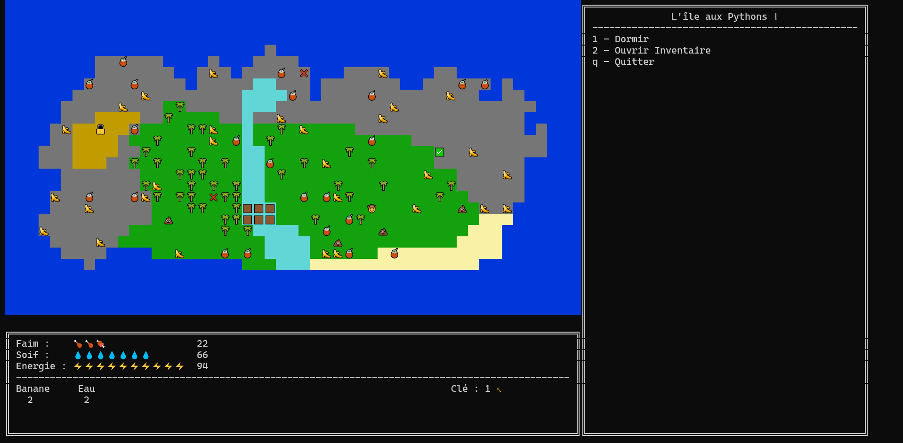

Histoire
Tu incarnes un aventurier à la recherche du graal. Comme beaucoup de personnes, tu t'es rendu dans le triangle des Bermudes. La légende raconte que personne n'en est sorti vivant. Mais toi... Toi tu n'es pas né de la dernière pluie, et tu sais bien qu'il ne faut pas forcer le destin. Mais de la à faire couler son propre bateau et se laisser dériver, c'est INCENSÉ ! Et pourtant, tu te retrouve sur une île sur laquelle personne n'a jamais mis les pieds ! Incroyable, tu as réussi...
Gameplay de l'île aux Pythons
